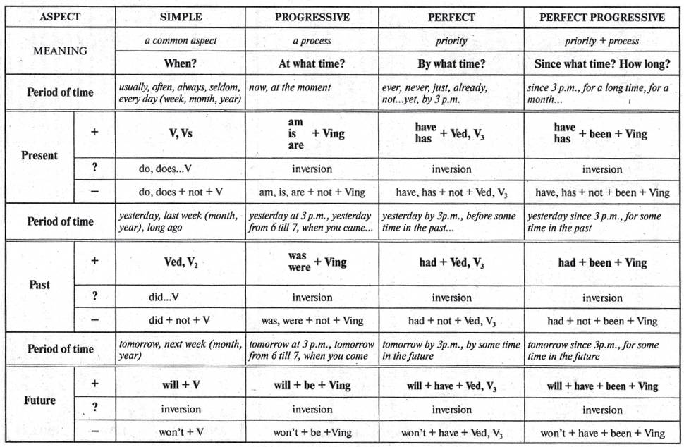

English blog
14.08.2014 Passive voice
Passive voice, the first article
Passive voice, the second article
11.08.2014 Asking directions
Asking directions
Vocabulary
10.08.2014 Table of English tenses
Table of English tenses
Bewley's test
09.08.2014 English tenses excercises
Simple and continuous tenses 1
Simple and continuous tenses 2
Mixed tenses
05.08.2014 English tenses

16.07.2014 Conditional sentences
Conditional sentences
15.07.2014 At a hotel
At a hotel
Hotel dialogues
Hotel check-in
06.07.2014 Present tenses
The first article
The second article
Present simple tense
Present continuous tense
Present perfect tense
Present perfect continuous
The first test
The second test
The third test
04.07.2014 Speaking on the phone
An article
03.07.2014 What and that
The first article
The second article
11.06.2014 Prepositions of place
Prepositions of place: at, in, on
08.06.2014 Making an appointment
Making an appointment on the phone
"Make" or "do"?
04.06.2014 English articles
Rules:
The first unit
The second unit
Excercises:
The first unit: A famous detective and his deputy
The second unit
The third unit
The fourth unit
The fifth unit
The sixth unit
The seventh unit
The eighth unit
The ninth unit
More excercises
01.06.2014 What time is it?
What time is it?
Prepositions of time
"How many" or "how much"?
"A few" or "a little"?